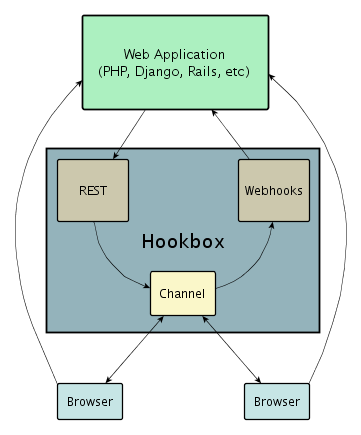

Hookbox’s purpose is to ease the development of real-time web applications, with an emphasis on tight integration with existing web technology. Put simply, Hookbox is a web-enabled message queue. Browers may directly connect to Hookbox, subscribe to named channels, and publish and receive messages on those channels in real-time. An external application (typically the web application itself) may also publish messages to channels by means of the Hookbox REST interface. All authentication and authorization is performed by an external web application via designated “webhook” callbacks.
Any time a user connects or operates on a channel, ( subscribe, publish, unsubscribe) Hookbox makes an http request to the web application for authorization for the action. Once subscribed to a channel, the user’s browser will receive real-time events that originate either in another browser via the javascript api, or from the web application via the REST api.
They key insight is that all application development with hookbox Happens either in javascript, or in the native language of the web application itself (e.g. PHP.)
Throughout this documentation, we throw various terms around like you should know what we’re talking about. This is probably not always the case, so this section includes a list of terms that have caused trouble to previous readers.
- Application, Web Application, Web app: An HTTP based application; commonly written with PHP, Django, Ruby on Rails, ASP.NET, and Java servlets.
- Browser, Client: Firefox, IE, Chrome, Safari, Opera, or some variant.
- Webhook, HTTP callback: A HTTP request made from Hookbox to the Web app when various events occur on the Hookbox server.
Hookbox is built around the concept of named Channels which are extremely flexible. These channels can be configured by the web application to provide many features out of the box. Here are a few typical patterns:
When a user connects to a web page with a real-time, time series graph, that user needs access to the last N data points on the graph. After that, the user needs updates on an interval. Lets say that we want to build a graph that shows a new data point every second, and always shows the last 30 seconds of data. Firstly, we enable a history on the channel with:
"history_size": 30This will cause the channel to send any new subscribers the last 30 data points immediately when they subscribe.
Next we need to put data into the channel on an interval. There are a number of ways we could do this, for instance we have access to the REST API so we could set a cron job that calls http://HOOKBOX_HOST:HOOKBOX_PORT/rest/publish every second. But this method is clumsy and imposes additional deployment constraints on our application. Instead, we can use the channel polling feature to populate our channel with data from a remote url every second. Assuming we had an application hosted at http://example.org/cpu_usage which returns a single number representing our target data, we can set polling up like so:
"polling": {
"url": "http://example.org/cpu_usage",
"interval": 1.0,
"mode": "simple"
}Now our channel will automatically poll our application for new data points every second, and then rebroadcast that too all subscribers.
Putting it all together, our actual implementation would consist of just a few pieces.
If you’re interested in seeing a completed version of this type of application then take a look at the PHP Real-time Time Series Graph on github.
A chat room should contain a history, and presence information (We should see who is in the room, and receives notifications when users join or leave.) Also, its nice to have the server send your own chat messages back to you so you can be sure they went through, so we will turn on reflection. All we need to do is implement a create_channel callback that sets this up by returning:
[ true, { "history_size": 20, "presenceful": true, "reflective": true } ]In some cases it is nice to persist all chat messages, joins, and leaves, so our web application needs to write these events to the database within the publish, subscribe, and unsubscribe callbacks.
If we have that information stored in a database, then we can fetch it out to pre-populate the history of the channel from the last conversation by returning the a “history” setting as well. Typically a history setting might look like this:
"history": [
[
"UNSUBSCRIBE",
{
"user": "mcarter"
}
],
[
"PUBLISH",
{
"payload": "Anyone there?",
"user": "mcarter"
}
],
[
"SUBSCRIBE",
{
"user": "mcarter"
}
]
]TODO
Hookbox is written in python and depends on setuptools for installation. The fastest way to install hookbox is to type:
# easy_install hookboxIf you are missing python or setuptools, please refer to the following links:
To confirm your installation succeeded, type:
# hookbox --helpThe development version of Hookbox is located on github:
You can get a copy of the latest source by cloning the repository:
# git clone git://github.com/mcarter/hookbox.gitTo install hookbox from source, ensure you have python and setuptools, then run:
# cd hookbox/hookbox
# python setup.py install